D'après le cours du Pr Marteau (Parasitologie — DFGSM3, 28-29/05/2026). Pivots : piège / forme grave · diagnostic · traitement · seuil / chiffre-clé. Figures du cours intégrées.Vers « hors programme » (trichine, anisakis, filaires…) retirés par le prof — non traités ici.
Partie 1 · Nématodoses (vers ronds)
1 · Généralités des nématodes
Vers ronds cylindriques (« spaghettis ») ; abondants dans les sols/végétaux.
Cuticule = enveloppe corporelle de résistance ; croissance discontinue → besoin de muer pour grandir.
Tube digestif complet (bouche → œsophage → intestin → anus).
Sexes séparés (gonochorique) → accouplement + ponte d'œufs par la femelle.
🔑 Les 3 grands nématodes à connaître : oxyure, ascaris, anguillule.
Localisation = gros intestin ; la femelle migre la nuit vers la marge anale pour pondre → prurit anal nocturne → grattage → œufs sous les ongles → auto-infestation + transmission à l'entourage.
Surtout l'enfant (familial/scolaire).
Clinique
Troubles du sommeil, irritabilité, baisse de concentration.
Chez la fille : migration génitale possible → vulvite.
Diagnostic
Présomption : hyperéosinophilie inconstante (modérée ou absente).
Certitude = test de Graham (scotch-test anal) : le matin au réveil, avant toilette (la femelle pond la nuit) ; scotch sur la marge anale → lame → œufs (parfois larves/adultes).
💊 Ttt (pas à connaître) : flubendazole / albendazole, à répéter à 3 sem (œufs devenus adultes) ; traiter toute la famille.
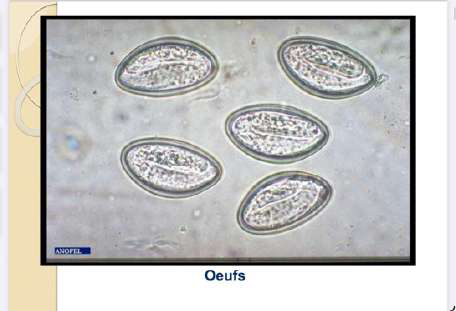
Œufs d'oxyure — forme de ballon de rugby (asymétrique), contenant une larve déjà formée → directement infestant.
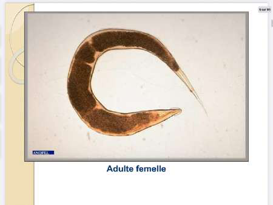
Oxyure adulte femelle — chaque point noir = un œuf (des milliers d'œufs).
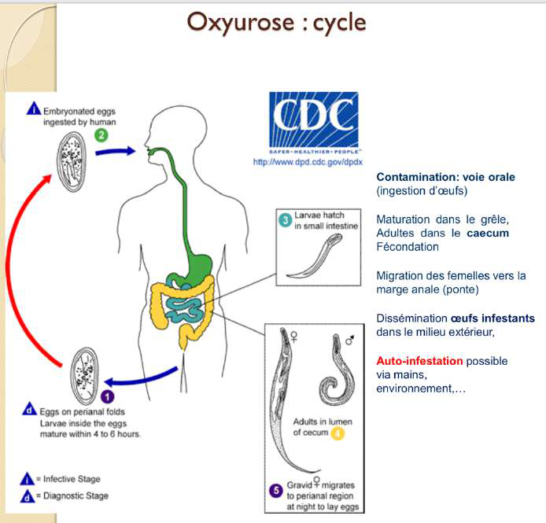
Cycle de l'oxyurose — ingestion oro-fécale des œufs → libération des larves dans le tube digestif → adultes dans le côlon → la femelle migre la nuit à la marge anale → ponte → dissémination/auto-infestation. (CDC)
3 · Ascaridiose
Le plus grand nématode humain ; réservoir strictement humain ; longévité 12-18 mois ; femelle 20-25 cm pondant jusqu'à 200 000 œufs/jour.
Cosmopolite, surtout régions chaudes et humides (œufs ont besoin de chaleur/humidité pour devenir infestants). Contamination orale par œufs infestants.
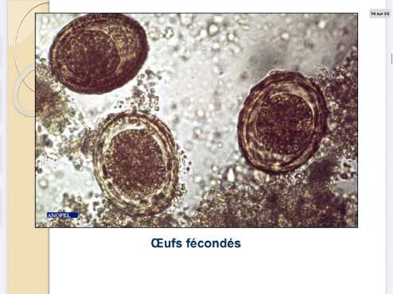
Œuf d'ascaris fécondé — coque mamelonnée sur les bords, pas encore de larve à l'intérieur.
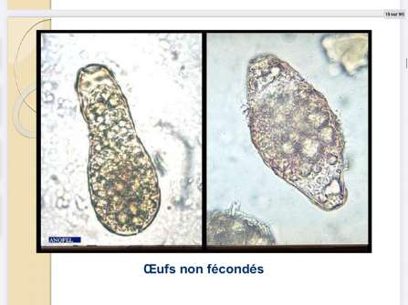
Œuf d'ascaris non fécondé — la femelle en produit énormément (forme allongée, irrégulière).
Cycle (à migration pulmonaire)
Estomac : les sucs cassent la coque → libération des larves → traversée de la paroi intestinale.
Migration : sang → poumons → alvéoles → bronches → trachée → carrefour aérodigestif → déglutition → retour à l'intestin → maturation en adultes → œufs non embryonnés dans les selles → maturation dans le milieu extérieur.
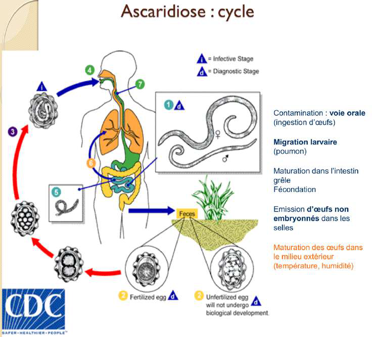
Cycle de l'ascaridiose — ingestion d'œufs infestants → larves → migration pulmonaire (foie → cœur → poumon → trachée → déglutition) → intestin grêle → adultes → œufs non embryonnés dans les selles. (CDC)
Clinique
Phase larvaire (J3-J4) : la migration pulmonaire donne fièvre modérée, toux, expectorations, infiltrats radiologiques disséminés, flous et fugaces, hyperéosinophilie 40-50 % → syndrome de Löffler (toux/dyspnée asthmatiformes + fébricule), manifestations allergiques/cutanées.
Phase d'état : douleurs abdominales ; éosinophilie qui décroît.
Complication : occlusion intestinale si vers nombreux → chirurgie.
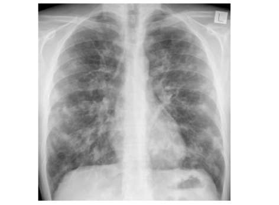
Syndrome de Löffler (radiographie) — infiltrats pulmonaires disséminés, flous et fugaces liés à la migration larvaire.
Diagnostic : œufs dans les selles ~2 mois après l'infestation (examen direct + concentration) ; adultes possibles dans selles/vomissements/pièces opératoires. Ttt : flubendazole / albendazole.
4 · Anguillulose
Agent : Strongyloides stercoralis ; femelle parthénogénétique 2-3 mm (produit des œufs sans fécondation).
Surtout en ceinture intertropicale (chaud/humide). Contamination par passage transcutané des larves strongyloïdes (marche pieds nus) → érythème prurigineux au point d'entrée.
Particularité : la femelle pond dans l'intestin → les œufs éclosent vite → dans les selles on retrouve surtout des larves rhabditoïdes (pas d'œufs).
Caractéristique
Larve rhabditoïde (L1)
Larve strongyloïde (L2)
Taille
~250 µm (plus courte)
~600 µm (plus longue)
Queue
pas de queue bifide
queue bifide
Cuticule
plus fine
plus épaisse
Rôle
éliminée dans les selles (pas de passage transcutané)
forme infectante (traverse la peau)
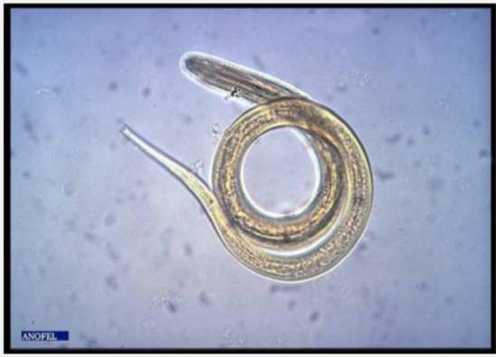
Anguillule (microscopie) — larves/adulte de Strongyloides stercoralis ; la distinction rhabditoïde (250 µm, dans les selles) vs strongyloïde (600 µm, infectante) oriente le diagnostic.
Cycle interne (auto-infestation) : rhabditoïdes → strongyloïdes directement dans l'intestin → traversent la paroi → poumons → recommencent → persistance des années, voire à vie, sans nouveau contact.
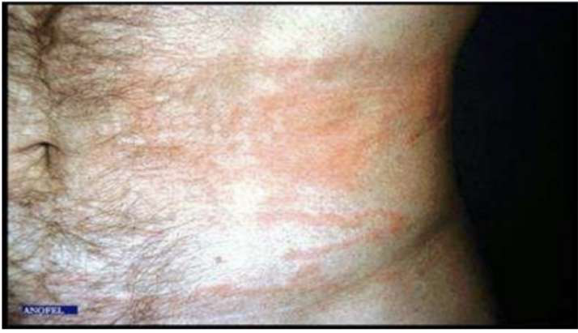
Cycle de l'anguillulose — la multiplicité des voies (transcutanée, cycle libre externe, auto-infestation interne) explique la chronicité prolongée. (CDC)
⚠️ Anguillulose maligne (forme grave) — chez l'immunodéprimé (corticoïdes, greffe, HTLV-1) : dissémination des anguillules dans des sites anormaux (LCR, urines…) → mortelle sans traitement. ⇒ Ivermectine préventive avant toute immunodépression chez un sujet ayant séjourné en zone d'endémie.
Clinique & diagnostic
Dermatite d'invasion → syndrome de Löffler (migration pulmonaire) → signes digestifs ; larva currens (traînées cutanées de l'auto-infestation).
Présomption : éosinophilie en « dents de scie » (↑ 30-50 % pendant les migrations larvaires, ↓ en phase d'état).
Certitude : larves rhabditoïdes dans les selles ~1 mois après ; EPS ×3 espacés de 2-3 j (élimination intermittente) ; technique de Baermann (larves mobiles migrent vers l'eau chaude).
Éosinophilie en « dents de scie » — caractéristique de l'anguillulose : oscillations liées à l'alternance migrations larvaires (pics) / phase intestinale (creux).
Partie 2 · Cestodoses (vers plats)
5 · Généralités des cestodes
Vers longs, plats, segmentés, composés de :
Scolex (tête) : ventouses ou crochets pour s'agripper à la paroi digestive ;
Cou : tissu prolifératif (la croissance se fait là) ;
Strobile (corps) : chaîne d'anneaux perdus un par un, contenant les œufs (embryophores) émis dans la nature.
6 · Taeniasis
2 espèces chez l'Homme : Taenia saginata (HI = bœuf) et Taenia solium (HI = porc). Homme = hôte définitif (ver adulte dans l'intestin) ; larves dans les muscles de l'animal.
T. saginata : anneaux très mobiles, expulsés activement (retrouvés parfois dans les sous-vêtements). T. solium : anneaux expulsés passivement (selles seulement).
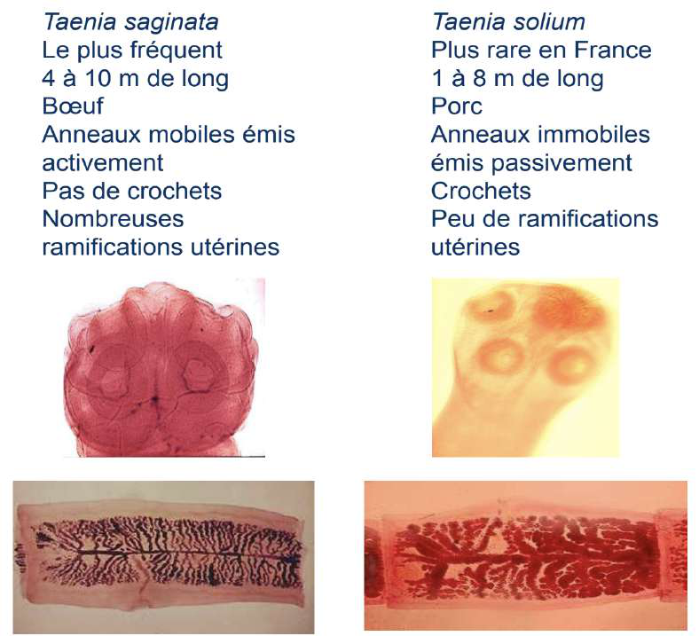
Taenia saginata vs Taenia solium — comparaison (hôte intermédiaire bœuf vs porc, scolex avec/sans crochets, mobilité des anneaux).
Cycle & clinique
Larve dans le muscle (bœuf/porc) → ingestion de viande crue/peu cuite → scolex s'accroche à l'intestin grêle → adulte → anneaux/œufs dans les selles → animal → cycle.
Clinique : souvent asymptomatique ; troubles digestifs (alternance diarrhée/constipation), prurit anal (surtout saginata), anorexie/boulimie ; découverte d'anneaux dans les selles/sous-vêtements.
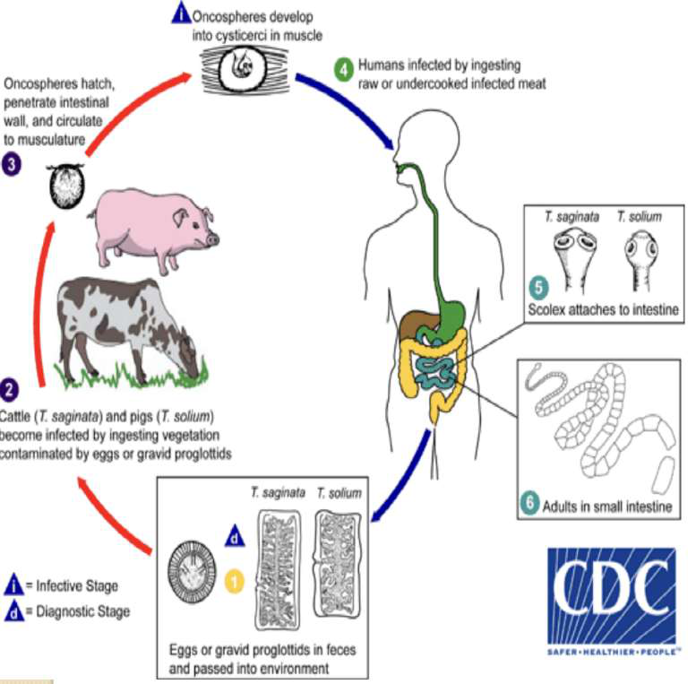
Cycle du taeniasis — l'homme se contamine en mangeant la viande parasitée ; le ver adulte se développe dans l'intestin et libère des anneaux/œufs dans les selles. (CDC)
🔑 Diagnostic : scotch-test anal (saginata) + EPS (anneaux/œufs). Éosinophilie souvent absente au stade adulte. Pas d'auto-infestation (contamination uniquement par la larve du muscle). Ttt : praziquantel (Biltricide) 10 mg/kg dose unique, niclosamide, albendazole. « Ver solitaire » = sécrète une substance empêchant la fixation d'autres parasites.
7 · Cysticercose
Due aux larves cysticerques de T. solium : l'Homme devient hôte intermédiaire accidentel → les larves se développent hors du tube digestif.
Contamination : ingestion d'embryophores (eau/végétaux souillés) ou auto-infestation chez un porteur de ver. Souvent liée au manque d'hygiène.
Gravité = atteinte du système nerveux.
Symptômes
Asymptomatique (découverte fortuite) ; nodules sous-cutanés/musculaires (calcifications « en grain de riz » à la radio) ; atteinte cérébrale/oculaire.
Neurocysticercose : parenchymateuse (épilepsie, déficit focal), sous-arachnoïdienne (HTIC), ventriculaire (HTIC, hydrocéphalie par blocage de l'aqueduc de Sylvius), médullaire (rare), oculaire (uvéite, vitré +++).
🔑 Diagnostic : imagerie IRM > TDM (nodules + œdème péri-lésionnel) ; LCR (protéinorachie modérée, ± éosinophiles) ; sérologie (Ac sérum + LCR, ELISA + Western Blot) — un Ac négatif n'élimine pas le diagnostic ; diagnostic direct si forme oculaire ou biopsie (sous-cutanée/cérébrale).
8 · Hydatidose (Echinococcus granulosus)
Cestode des canidés (chien, loup = hôtes définitifs) ; l'Homme = hôte intermédiaire accidentel → formation d'un kyste (avec protoscolex). Impasse parasitaire, anthropozoonose. Contamination par ingestion d'embryophores.
Géographie : régions d'élevage (Europe de l'Est, bassin méditerranéen, Afrique de l'Est, Amérique du Sud, Chine).
Clinique
Kyste hépatique (50-60 %) : souvent asymptomatique (découverte fortuite), pesanteur de l'hypocondre droit, hépatomégalie, tuméfaction lisse indolore.
Formes compliquées : rupture (biliaire/thoracique/péritonéale), fistule kysto-biliaire, compression (ictère, syndrome de Budd-Chiari), suppuration (abcès).
Autres : poumon (30-40 %), rate, os, SNC, rein.
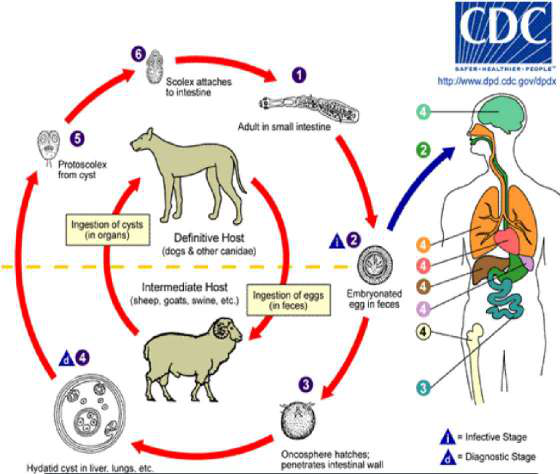
Cycle de l'hydatidose (E. granulosus) — adulte dans l'intestin du chien (hôte définitif) ; mouton/bétail = hôtes intermédiaires (kystes) ; l'Homme se contamine accidentellement par ingestion d'embryophores → kyste hydatique. (CDC)
🔑 Diagnostic : sérologie +++ (IF, HAI, ELISA + confirmation Western Blot) — un résultat négatif n'élimine pas ; éosinophilie en phase d'invasion / fissuration ; ED ou ponction uniquement par équipe entraînée (visualisation de crochets/protoscolex) ; examen de pièce opératoire. Ttt (pas à connaître) : albendazole/praziquantel ; chirurgie / méthode PAIR si kyste compressif/à risque.
Cestode des canidés (renard +++, chien = hôtes définitifs) ; plus rare que l'hydatidose mais plus grave. Impasse parasitaire : larves bloquées au stade larvaire, qui migrent dans les organes.
Contamination : embryophores des déjections sur végétaux → consommation de fruits contaminés.
Géographie : hémisphère nord ; France Est & Centre (10-15 cas/an) ; Europe de l'Est, Eurasie, Chine, Japon, Amérique du Nord.
Cycle de l'échinococcose alvéolaire (E. multilocularis) — adulte chez le renard (intestin) ; rongeurs = hôtes intermédiaires ; l'Homme se contamine par des végétaux/fruits souillés d'embryophores.
🔑 Diagnostic : imagerie (échographie, scanner, IRM) ; sérologie ELISA (anti-granulosus/multilocularis) + immunoblot (différenciation) ; anatomopathologie ; détection d'ADN. Différencier : hydatidose = 1 gros kyste localisé au foie ; échinococcose alvéolaire = plusieurs petits kystes. Ttt : chirurgie + albendazole/praziquantel au long cours (surveillance hépatique).
Synthèse
10 · Éosinophilie & conclusion
L'infestation par des vers (helminthes) s'accompagne d'une augmentation des éosinophiles ; le profil d'évolution de l'éosinophilie aide à orienter vers le type de parasite (ex. courbe en dents de scie = anguillulose).
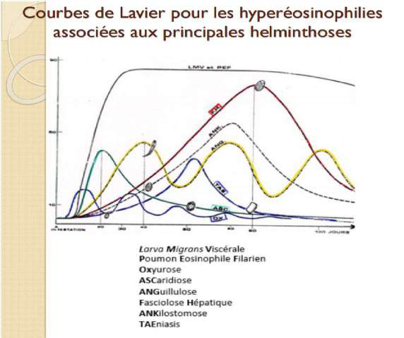
Courbes de Lavier — cinétique de l'hyperéosinophilie selon l'helminthose (date d'infestation, pic, décroissance) → aide à dater et orienter le diagnostic.
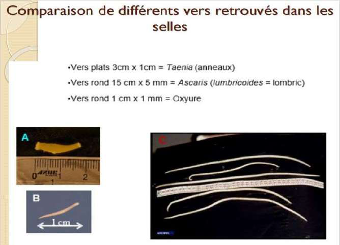
Comparaison des vers dans les selles — repères morphologiques pour différencier les helminthes à l'examen parasitologique.
⚠️ Taenia : larve plus dangereuse que l'adulte. L'adulte reste dans l'intestin (au pire diarrhée/constipation/amaigrissement) ; la larve (cysticercose) peut migrer au cerveau → épilepsie, HTIC, décès possible.